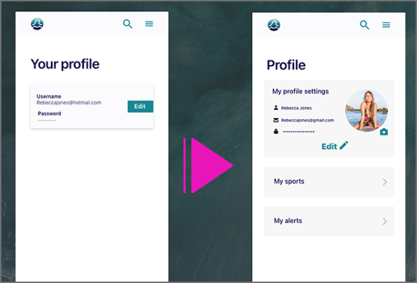
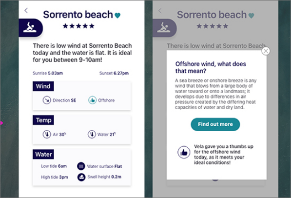
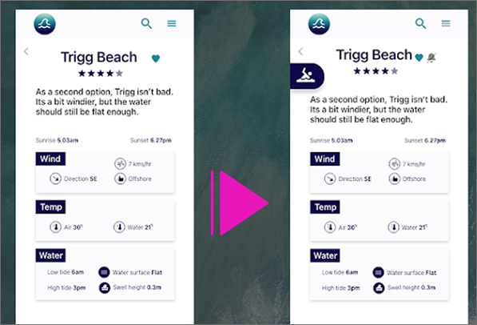
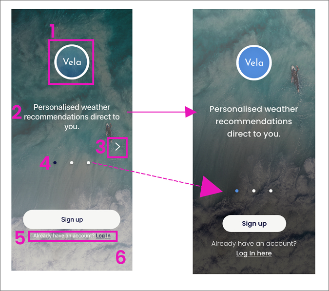
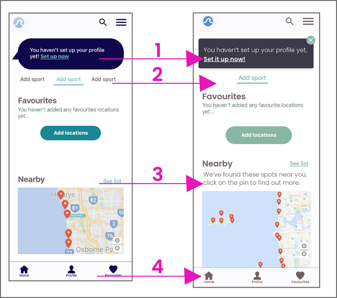
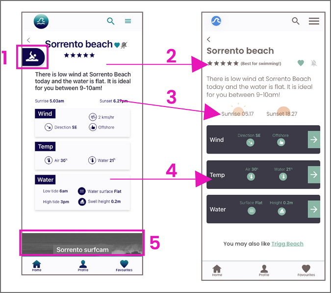

Vela Case study
Introduction
A case study showcasing user research, usability testing, prototyping, and iterative process of a personalised weather app for water users.
Overview
Vela is an IOS app for water sports enthusiasts. It makes personalised location and water sport recommendations for the current weather conditions. It also offers an educational platform for users who wish to expand their knowledge of weather.
Problem
How can water sports enthusiasts get access to weather information to help them enjoy the best conditions and stay safe in the water? Especially if they don’t understand weather reports?
Goal
Create an app for water users who have struggled with weather apps in the past. This project was created as part of my UX design course.
Role - UX lead designer
Duration - October 2020 - January 2021
Primary stakeholder - CareerFoundry UX course
Tools used - Adobe XD
My process:
- 1 Discover
- 2 Define
- 3 Ideate
- 4 Prototype
- 5 Validation
- 6 UI
#1 Discover
1.1 - Competitive & swot analysis - I started by identifying potential competitors and analysing their offerings with a Competitive & Swot analysis.
1.2 - In-person interviews - Next, I talked to 3 of my friends who are avid water users to find out more about their own experiences with weather apps. Only one of my friends said she found weather apps hard to use. As I also have experienced difficulty in the past, I assumed everyone felt the same, so it was extremely insightful to find this is not true for everyone, so early on in my research.
1.3 - Empathy mapping - Using Empathy mapping, I explored more about the wants, need & emotions of my potential users.
#2 Define
2.1 - Primary persona & user needs. There were 2 clear types of user. Being most like me, I decided to direct the app towards the more in-experienced user. I feel there is a big potential market for a product like this.
From here, I created my primary persona.
2.2 Card sorting - Now I had my primary persona designed, I conducted an online card sort with 12 participants who were all keen water users. From here, I was able to start to creating my sitemap.
2.3 Sitemap & iteration - I then created the sitemap, which took a couple of iterations after some feedback and testing.
#3 Ideate
3.1 Low fidelity wireframes- Below you can see the initial wireframe ideation for creating a profile. The main consideration during this phase, was to keep this process as minimal as possible, but still obtaining the most important information.
3.2 Mid fidelity wireframes- After some feedback, I included an additional step for the mid-fidelity wireframes, 'adding an ability level' when the user was choosing their sports.
3.3 Creating interactive prototype - I then started to design the interactive prototype using Adobe XD.
#4 Prototype
The design was made in black and white, and with no imagery or icons, so as not to distract the users during user testing with UI aspects.
#5 Validation
5.1 User testing - I moderated in-person user testing sessions with 6 participants. The users were selected due to their experience with using weather apps in the past.
5.2 Results - The testing session was extremely insightful. I used Affinity mapping and a Rainbow spreadsheet to collate the information into manageable chunks. The rainbow spreadsheet helped me to recognise major issues with my design.
5.3 Iterations - Now I had this information, I was able to collate the top priority issues. There were many iterations I made to the prototype. Below are 3 of them.
#1 Combine the profile page to include sports and location preferences.
#2 Make icons clickable.
#3 Include an icon to indicate which sport the recommendation is for.
#6 UI
6.1 Iterations - The next step was to focus on the UI elements of the app. I reached out to my network and peers to get some feedback. The focus of these iterations were mainly associated with accessibility, colours & contrast, copy length & relevance.
#1 Logo, headline, arrows, dots, log-in text, background image.
#2 Recommendation box, add sport links, map text, bottom navigation.
#3 Sport icon, heirarchy of text, inclusion of sun icons, darker info boxes, removal of surfcam.
6.2 Retrospective - What did I learn?
It was extremely insightful to interview the potential users and find the real reason behind why people stop using these apps. This re-iterated to me that you can never assume, and the only way to get solid proof, is by talking & observing users in action.
What would I do differently? If I was to do this project again, I would definitely seek out more feedback from my peers more regularly, as the feedback gained during the UI stage was priceless.
What would be changed from a process point of view? I would have liked to conduct at least two more user testing sessions to get further insights for more iterations.
What People Are Saying? “I wish this was a real app, I would definitely use it, as it’s so easy!” — Lauren